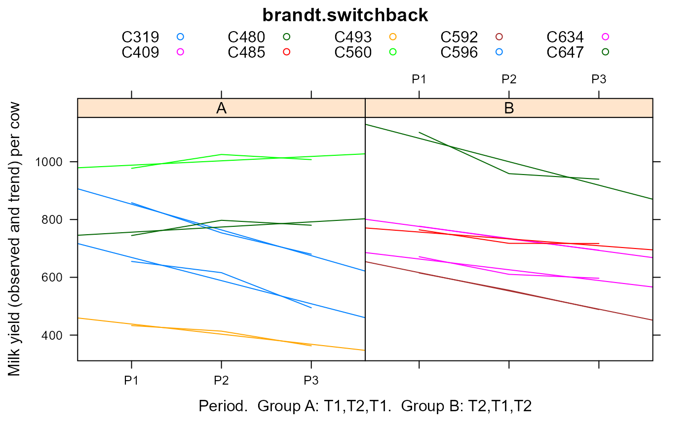

brandt.switchback.RdSwitchback experiment on dairy cattle, milk yield for two treatments
data("brandt.switchback")
A data frame with 30 observations on the following 5 variables.
groupgroup: A,B
cowcow, 10 levels
trttreatment, 2 levels
periodperiod, 3 levels
yieldmilk yield, pounds
In this experiment, 10 cows were selected from the Iowa State College Holstein-Friesian herd and divided into two equal groups. Care was taken to have the groups as nearly equal as possible with regard to milk production, stage of gestation, body weight, condition and age. These cows were each given 10 pounds of timothy hay and 30 pounds of corn silage daily but were fed different grain mixtures. Treatment T1, then, consisted of feeding a grain mixture of 1 part of corn and cob meal to 1 part of ground oats, while treatment T2 consisted of feeding a grain mixture of 4 parts corn and cob meal, 4 parts of ground oats and 3 parts of gluten feed. The three treatment periods covered 105 days -- three periods of 35 days each. The yields for the first 7 days of each period were not considered because of the possible effect of the transition from one treatment to the other. The data, together with sums and differences which aid in the calculations incidental to testing, are given in table 2.
It seems safe to conclude that the inclusion of gluten feed in the grain mixture fed in a timothy hay ration to Holstein-Friesian cows increased the production of milk. The average increase was 21.7 pounds per cow for a 28-day period.
A.E. Brandt (1938). Tests of Significance in Reversal or Switchback Trials Iowa State College, Agricultural Research Bulletins. Bulletin 234. Book 22. http://lib.dr.iastate.edu/ag_researchbulletins/22/
library(agridat) data(brandt.switchback) dat <- brandt.switchback # In each period, treatment 2 is slightly higher # bwplot(yield~trt|period,dat, layout=c(3,1), main="brandt.switchback", # xlab="Treatment", ylab="Milk yield") # Yield at period 2 (trt T2) is above the trend in group A, # below the trend (trt T1) in group B. # Equivalently, treatment T2 is above the trend line libs(lattice) xyplot(yield~period|group, data=dat, group=cow, type=c('l','r'), auto.key=list(columns=5), main="brandt.switchback", xlab="Period. Group A: T1,T2,T1. Group B: T2,T1,T2", ylab="Milk yield (observed and trend) per cow")# Similar to Brandt Table 10 m1 <- aov(yield~period+group+cow:group+period:group, data=dat) anova(m1)#> Analysis of Variance Table #> #> Response: yield #> Df Sum Sq Mean Sq F value Pr(>F) #> period 2 34979 17489 10.0589 0.001483 ** #> group 1 3874 3874 2.2280 0.154985 #> group:cow 8 950792 118849 68.3560 6.516e-11 *** #> period:group 2 4282 2141 1.2315 0.318096 #> Residuals 16 27819 1739 #> --- #> Signif. codes: 0 '***' 0.001 '**' 0.01 '*' 0.05 '.' 0.1 ' ' 1